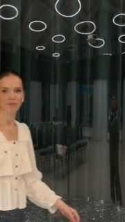
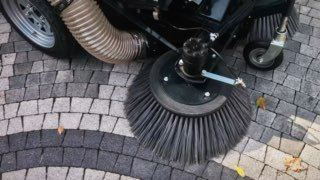
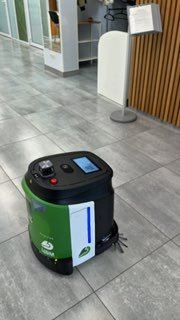
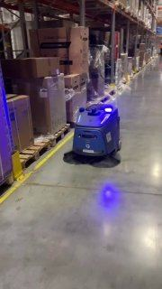
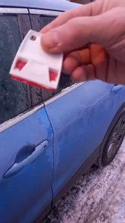
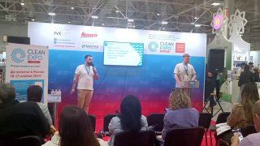

CleanExpo Moscow 2026
Видео
Видео и видеопубликации участников о технике, роботизации и выставках. Продолжительность указана только там, где её сообщает источник.
Меркатор · 2026-11-13
Вы ждали, вы просили – и вот он! 🔥 Большой видеообзор легендарной ВКМ 2024 . Знакомимся с машиной поближе, рассматриваем детали и показываем ее в деле. Включайте видео и приятного просмотра! 🟠 Rutube смотреть 🟠 VK смотреть 🟠 Dzen смотреть 🚚 Меркатор
Публикация участника
Открыть публикацию ↗![Превью: Как и где создается коммунальная техника Меркатор? От первых этапов разработки до готовой машины – обо всем этом мы рассказали команде Авито Спецтехника и Минпромторг. Коллеги приехали к нам на завод, чтобы снять большой фильм в рамках проекта «Линия сборки». Получился живой разговор с нашей командой о производстве, подходе к работе, философии Меркатор и нашем видении будущего дорожно-коммунальной отрасли. 🔥 Для нас это еще одна возможность показать, сколько труда, знаний и командной работы стоит за каждой машиной Меркатор. Смотрите большой фильм, это действительно интересно! 🟠 IVI смотреть 🟠 VK смотреть 🟠 Dzen смотреть 🚚 Меркатор](media/telegram/4681c359f17e2de14cc180da.jpg)
Меркатор · 2026-11-10
Как и где создается коммунальная техника Меркатор? От первых этапов разработки до готовой машины – обо всем этом мы рассказали команде Авито Спецтехника и Минпромторг. Коллеги приехали к нам на завод, чтобы снять большой фильм в рамках проекта «Линия сборки». Получился живой разговор с нашей командой о производстве, подходе к работе, философии Меркатор и нашем видении будущего дорожно-коммунальной отрасли. 🔥 Для нас это еще одна возможность показать, сколько труда, знаний и командной работы стоит за каждой машиной Меркатор. Смотрите большой фильм, это действительно интересно! 🟠 IVI смотреть 🟠 VK смотреть 🟠 Dzen смотреть 🚚 Меркатор
Публикация участника
Открыть публикацию ↗
Фаэтон | Про клининговое оборудование · 2026-11-05
Приглашаем коллег и партнеров на CleanExpo 2026 Ждём вас 17–19 ноября в «Крокус Экспо», павильон 1, зал 3, стенд A323. Получить бесплатный билет по промокоду «wellland» — https://www.cleanexpo-moscow.ru/ru-RU/visitors/e-ticket.aspx?promo=wellland
Публикация участника
Открыть публикацию ↗
Группа компаний Смирновъ · 2026-11-05
Следующая остановка - Clean Expo! 🫧 Крупнейшая выставка в сфере клининга, гигиены и профессиональной уборки вновь открывает свои двери! И, конечно, компания «Смирновъ» тоже будет там! 📍 17-19 ноября Москва,Крокус Экспо, НАШ СТЕНД - А201 До встречи! ❄️
Публикация участника
Открыть публикацию ↗
Меркатор · 2026-11-03
Электрическая коммунальная техника вызывает все больший интерес у городов России. ⚡️ Количество запросов на ВКМ 550Е растет изо дня в день, и мы понимаем, что эту машину хочется рассмотреть поближе. Поэтому подготовили для вас полноценный видеообзор нашей электрической новинки! Покажем ее в работе, расскажем о возможностях и поможем лучше понять, на что она способна. 🎥 Включайте видео и знакомьтесь с ВКМ 550Е ! 🟠 Rutube ссылка 🟠 VK ссылка 🟠 Dzen ссылка 🚚 Меркатор
Публикация участника
Открыть публикацию ↗
АГБИС новости · 2026-10-30
Это было в Ташкенте Разбирали отзывы, обсуждали рабочие ситуации и искали решения вместе с залом. А следующая большая встреча пройдёт в Москве, на CleanExpo. Послушаем истории автоматизации из первых уст, обсудим опыт коллег и вместе выберем лучшую историю. 📍 17 ноября, 14:00–15:00, конференц-зал F Приходите с вопросами. Чужой опыт особенно полезен, когда его можно обсудить с теми, кто всё прошёл сам. Бесплатный билет #АгбисМероприятия
Публикация участника
Открыть публикацию ↗
Фаэтон | Про клининговое оборудование · 2026-10-29
САМЫЙ ТИХИЙ ПЫЛЕСОС ДЛЯ ОТЕЛЕЙ Тише вы точно не найдете. Смотрите новый обзор от Александра Заказать тут
Публикация участника
Открыть публикацию ↗
QRobotics | Роботы для уборки · 2026-10-03
А вот так наш робот работает с лифтом - полностью самостоятельно, без участия оператора. Он сам вызывает лифт, ожидает на безопасном расстоянии, после выхода освобождает проход для людей и только затем продолжает работу. Полностью автономная система, которая уже показывает свою эффективность на многих наших проектах.
Публикация участника
Открыть публикацию ↗![Превью: У нас новый знаковый объект - Музей транспорта Москвы в Гараже Мельникова. Совсем недавно Сергей Собянин открыл здесь новую постоянную экспозицию. А за чистоту одного из самых современных музейных пространств Москвы теперь будут помогать отвечать наши роботы-уборщики. На первом этапе роботы QRobotics будут убирать первый этаж музея . В дальнейшем планируем расширить автоматизацию и на второй этаж. Для роботизированной уборки это особенно интересный объект: большое пространство, постоянный поток посетителей и высокие требования к чистоте - при этом уборка должна проходить максимально незаметно для гостей и не мешать работе музея. Очень приятно быть частью такого знакового для Москвы проекта и видеть, как роботизация становится частью не только складов, торговых центров и офисов, но и современных общественных пространств. Технологии будущего теперь помогают сохранять в чистоте историю транспорта.](media/telegram/36b7b59c9196052f266f0116.jpg)
QRobotics | Роботы для уборки · 2026-10-01
У нас новый знаковый объект - Музей транспорта Москвы в Гараже Мельникова. Совсем недавно Сергей Собянин открыл здесь новую постоянную экспозицию. А за чистоту одного из самых современных музейных пространств Москвы теперь будут помогать отвечать наши роботы-уборщики. На первом этапе роботы QRobotics будут убирать первый этаж музея . В дальнейшем планируем расширить автоматизацию и на второй этаж. Для роботизированной уборки это особенно интересный объект: большое пространство, постоянный поток посетителей и высокие требования к чистоте - при этом уборка должна проходить максимально незаметно для гостей и не мешать работе музея. Очень приятно быть частью такого знакового для Москвы проекта и видеть, как роботизация становится частью не только складов, торговых центров и офисов, но и современных общественных пространств. Технологии будущего теперь помогают сохранять в чистоте историю транспорта.
Публикация участника
Открыть публикацию ↗
QRobotics | Роботы для уборки · 2026-09-29
⚡️ Использование роботов-уборщиков может сэкономить владельцам складов порядка 2 млн рублей в год, говорится в исследовании Московского инновационного кластера, Сбера и Сколтех, которое презентовали на Московском стартап-саммите. Аналитики сравнили два способа…
Публикация участника
Открыть публикацию ↗![Превью: Как проходит тест-драйв робота-уборщика на вашем объекте? 🚀 💻 На видео показали этапы тестирования в медицинском центре — от установки до самостоятельной работы робота-уборщика. Как проходят 7 дней тестирования: 1️⃣ Пусконаладка и ввод в эксплуатацию ➖ Доставка и сборка: Привозим технику на объект и берем на себя обратную транспортировку. ➖ Инженерия и интеграция: Наш инженер оцифровывает помещение, строит карту, привязывает робота к маршрутам и проводит первичный запуск. ➖ Обучение персонала базовому управлению и уходу за роботом. 2️⃣ Автономная работа на вашем объекте ➖ Реальная работа: Робот переходит в распоряжение вашей команды. Вы проверяете его в стандартных рабочих условиях без нашего вмешательства. ➖ Аналитика: Оцениваете скорость, качество уборки и экономию ресурсов по реальным отчетам. Закажите тестирование на своем объекте – оцените выгоды роботов-уборщиков в реальных условиях! Подробнее на сайте 🚀 #artix_robots_support](media/telegram/dc444a2cd8c1490f48c58b6a.jpg)
Всё о роботах для бизнеса | «Артикс Робот» 🚀 · 2026-08-14
Как проходит тест-драйв робота-уборщика на вашем объекте? 🚀 💻 На видео показали этапы тестирования в медицинском центре — от установки до самостоятельной работы робота-уборщика. Как проходят 7 дней тестирования: 1️⃣ Пусконаладка и ввод в эксплуатацию ➖ Доставка и сборка: Привозим технику на объект и берем на себя обратную транспортировку. ➖ Инженерия и интеграция: Наш инженер оцифровывает помещение, строит карту, привязывает робота к маршрутам и проводит первичный запуск. ➖ Обучение персонала базовому управлению и уходу за роботом. 2️⃣ Автономная работа на вашем объекте ➖ Реальная работа: Робот переходит в распоряжение вашей команды. Вы проверяете его в стандартных рабочих условиях без нашего вмешательства. ➖ Аналитика: Оцениваете скорость, качество уборки и экономию ресурсов по реальным отчетам. Закажите тестирование на своем объекте – оцените выгоды роботов-уборщиков в реальных условиях! Подробнее на сайте 🚀 #artix_robots_support
Публикация участника
Открыть публикацию ↗![Превью: Робот уборщик Gausium в отеле River Park 🚀 ⚙️ В рамках проекта по автоматизации уборки в популярном отеле в Новосибирске команда «Артикс Робот» реализовала внедрение робота-уборщика Gausium Phantas S1 Pro с автоматической док-станцией. ➖ Поддерживающая уборка холла в течение дня и автоматическая ночная уборка ➖ Повышение качества сервиса и имиджа за счет современных технологий ➖ Быстрая настройка и интеграция 🔹 Площадь уборки: около 211 м² 🔹 Время: 24 минуты на цикл 🔹 Потребление воды: 1,5 литров 🔹 Количество циклов: 4 раза в день Робот успешно обходит препятствия, включает голосовые предупреждения на русском и полностью автоматизирован — сам заряжается, сливает грязную воду и наполняет чистую. Этот проект подтверждает, что современные роботизированные системы — отличное решение для гостиниц, которые стремятся оптимизировать нагрузку на персонал и подтвердить высокий уровень сервиса! 💻 Подробнее. #artix_robots_cases #artix_robots_gausium](media/telegram/53ee18c5261b0bac5f0e1233.jpg)
Всё о роботах для бизнеса | «Артикс Робот» 🚀 · 2026-07-08
Робот уборщик Gausium в отеле River Park 🚀 ⚙️ В рамках проекта по автоматизации уборки в популярном отеле в Новосибирске команда «Артикс Робот» реализовала внедрение робота-уборщика Gausium Phantas S1 Pro с автоматической док-станцией. ➖ Поддерживающая уборка холла в течение дня и автоматическая ночная уборка ➖ Повышение качества сервиса и имиджа за счет современных технологий ➖ Быстрая настройка и интеграция 🔹 Площадь уборки: около 211 м² 🔹 Время: 24 минуты на цикл 🔹 Потребление воды: 1,5 литров 🔹 Количество циклов: 4 раза в день Робот успешно обходит препятствия, включает голосовые предупреждения на русском и полностью автоматизирован — сам заряжается, сливает грязную воду и наполняет чистую. Этот проект подтверждает, что современные роботизированные системы — отличное решение для гостиниц, которые стремятся оптимизировать нагрузку на персонал и подтвердить высокий уровень сервиса! 💻 Подробнее. #artix_robots_cases #artix_robots_gausium
Публикация участника
Открыть публикацию ↗![Превью: Новинка — Инновационная поломоечная машина PUDU SH1 🚀 Интеллектуальная поломоечная машина с ручным управлением, которая переворачивает представление об уборке в HoReCa. Идеальное решение для ресторанов, кафе и фуд-кортов! 🔵 Максимальная эффективность : Экономит до 80% воды и химии, а время уборки сокращает на 70%. 🔵 Многофункциональность: Не просто моет пол, а мгновенно сушит его, а также очищает стены, зеркала и витрины благодаря специальным аксессуарам. 🔵 Умный подход: Уникальный бак разделяет жидкость и твердый мусор, исключая засоры, а мобильное приложение предоставляет детальную аналитику и отчеты о работе. На видео — PUDU SH1 в реальных условиях ресторана. Смотрите, как легко он маневрирует между столиками и справляется со стойкими загрязнениями даже в самых труднодоступных зонах! ✅ Попробуйте на своем объекте – возьмите в тестирование! #artix_robots_pudu #artix_robots_news](media/telegram/28afb1ba825a50608f2b9293.jpg)
Всё о роботах для бизнеса | «Артикс Робот» 🚀 · 2026-06-11
Новинка — Инновационная поломоечная машина PUDU SH1 🚀 Интеллектуальная поломоечная машина с ручным управлением, которая переворачивает представление об уборке в HoReCa. Идеальное решение для ресторанов, кафе и фуд-кортов! 🔵 Максимальная эффективность : Экономит до 80% воды и химии, а время уборки сокращает на 70%. 🔵 Многофункциональность: Не просто моет пол, а мгновенно сушит его, а также очищает стены, зеркала и витрины благодаря специальным аксессуарам. 🔵 Умный подход: Уникальный бак разделяет жидкость и твердый мусор, исключая засоры, а мобильное приложение предоставляет детальную аналитику и отчеты о работе. На видео — PUDU SH1 в реальных условиях ресторана. Смотрите, как легко он маневрирует между столиками и справляется со стойкими загрязнениями даже в самых труднодоступных зонах! ✅ Попробуйте на своем объекте – возьмите в тестирование! #artix_robots_pudu #artix_robots_news
Публикация участника
Открыть публикацию ↗![Превью: 🔔 Приглашаем партнёров на экскурсию по производству роботов-уборщиков в Ярославле. ✔️ Формат мероприятия: экскурсия по производству компании R2B + деловая часть + вопросы напрямую инженерам и производителю. Кому подойдёт: руководителям и собственникам клининговых компаний, специалистам управляющих компаний, технологам и представителям клининговой отрасли, которые планируют пилотный проект и хотят эффективно подготовиться к внедрению. ➡️ За 6 часов покажем и разберём: 🟢 Как устроен робот-уборщик: ключевые узлы, логика конструкции, этапы сборки. 🟢 Как подготовить объект и запустить робота: шаги внедрения и типовые требования. 🟢 Как робот работает с разными типами загрязнений и протестируем насколько он безопасен. 🟢 Экономику внедрения: какие параметры влияют на результат и как их считать. 🟢 Расчёт под ваш объект: поможем собрать вводные и посчитать ключевые показатели. 🗓 Дата: 20 марта Начало в 10:00 Кофе-брейк и обед включены. Адрес: Ярославль, ул. Полушкина Роща, 1. 🆓 УЧАСТИЕ БЕСПЛАТНОЕ Количество мест ограничено - обязательна предварительная регистрация: 🔗 https://clck.ru/3RtBVb После регистрации мы свяжемся с вами, пришлём схему проезда и контакты организаторов.](media/telegram/a93f3ef9df10b0c203892c3c.jpg)
R2B stories · 2026-02-25
🔔 Приглашаем партнёров на экскурсию по производству роботов-уборщиков в Ярославле. ✔️ Формат мероприятия: экскурсия по производству компании R2B + деловая часть + вопросы напрямую инженерам и производителю. Кому подойдёт: руководителям и собственникам клининговых компаний, специалистам управляющих компаний, технологам и представителям клининговой отрасли, которые планируют пилотный проект и хотят эффективно подготовиться к внедрению. ➡️ За 6 часов покажем и разберём: 🟢 Как устроен робот-уборщик: ключевые узлы, логика конструкции, этапы сборки. 🟢 Как подготовить объект и запустить робота: шаги внедрения и типовые требования. 🟢 Как робот работает с разными типами загрязнений и протестируем насколько он безопасен. 🟢 Экономику внедрения: какие параметры влияют на результат и как их считать. 🟢 Расчёт под ваш объект: поможем собрать вводные и посчитать ключевые показатели. 🗓 Дата: 20 марта Начало в 10:00 Кофе-брейк и обед включены. Адрес: Ярославль, ул. Полушкина Роща, 1. 🆓 УЧАСТИЕ БЕСПЛАТНОЕ Количество мест ограничено - обязательна предварительная регистрация: 🔗 https://clck.ru/3RtBVb После регистрации мы свяжемся с вами, пришлём схему проезда и контакты организаторов.
Публикация участника
Открыть публикацию ↗
Ракели и Скребки · 2026-02-07
Видео участника
Публикация участника
Открыть публикацию ↗
Ракели и Скребки · 2026-01-26
МИНИСКРЕБОК - 3-е применение(может пришествие 😂 ). Он у нас всегда в кармане. Удобный и маленький. Сегодня, мы быстро почистили стекло. 🎅🏻 Очень удобно! 🔗 Он в меру мягкий, в меру твердый. Жесткая правда- очень удобно. Он чистит лучше чем стандартные жесткие скребки. #произведеновроссии ; #удобно ; #инструменты ; #произведеновроссии ; #минискребок ;
Публикация участника
Открыть публикацию ↗
ТехСнаб | Сервисные роботы · 2025-11-11
Встречаемся в КрокусЭкспо Сегодня стартовала выставка CleanExpo и наша команда уже на позиции.
Публикация участника
Открыть публикацию ↗
Т-КОМПАНИ · 2024-04-23
Сегодня состоялось открытие выставки CleanExpo Краснодар 2024! Наша компания в очередной раз принимает участие в этом знаковом событии мира клининговой техники. На стенде Т‑КОМПАНИ вы можете ознакомиться с наиболее популярными моделями техники Gadlee, Tennant, Delfin и нашей собственной линейки t-line. Рекомендуем поучаствовать в нашем интерактивном розыгрыше скидок!
Публикация участника
Открыть публикацию ↗